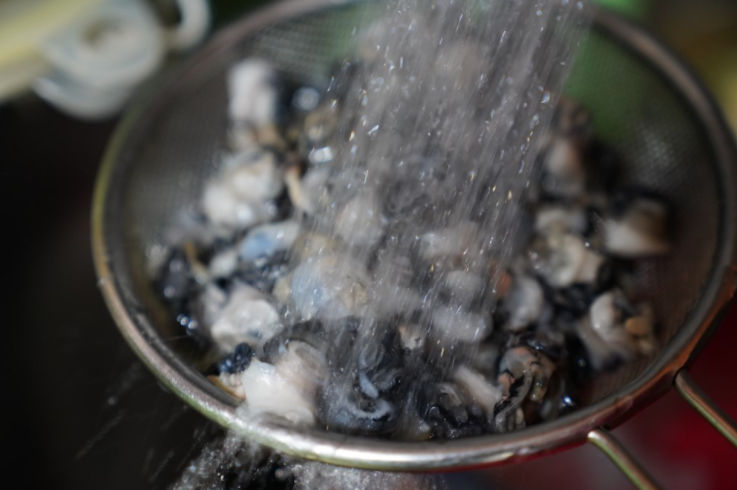
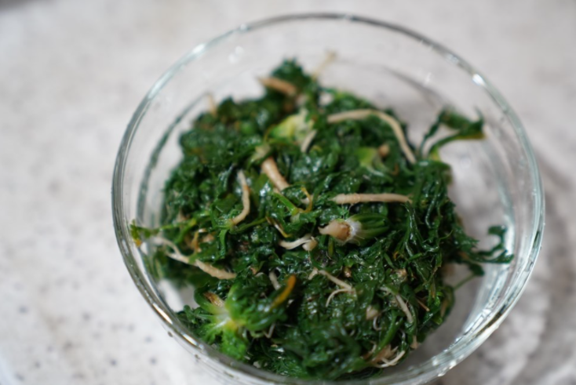

Korea Food
재료 리스트
냉이 1줌 | 쌀뜬 물 6컵 | 된장 2스푼 | 대파 1대 | 청양고추 2개 | 우렁 1컵 | 소금
레시피
1. 우렁 손질하기
우렁을 굵은 소금을 조금 넣고 주물러 깨끗하게 씻어준 다음 찬물에 헹궈 체에 걸러 물기를 제거해주세요.

2. 냉이 손질
냉이는 뿌리가 지나치게 굵지 않고, 잎이 짙은 녹생을 띠며 향이 진한 것으로 골라주세요.
냉이를 흐르는 물에 잘 씻어 흙을 제거한 뒤 냉이의 잔뿌리를 칼로 살살 긁어내주세요.
시든 잎은 떼어내 물에 담가두어 체에 받쳐 사용하면 됩니다.
3. 조리
쌀뜬 물이 끓기 전에 손질한 냉이와 우렁을 넣고 끓기 시작하면 대파를 쏭쏭 썰어 넣어주세요.
보글보글 끓기 시작하면 된장 2스푼을 넣고 잘 풀어준 뒤 조금 더 끓여주세요.

우렁 냉이 된장국 완성 !!